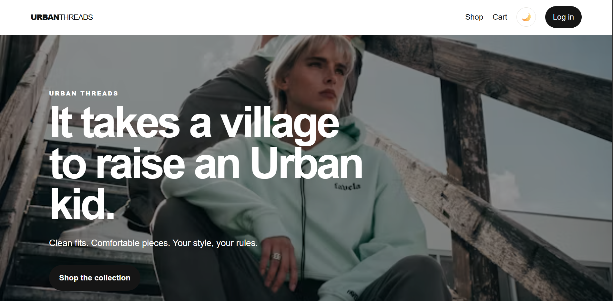
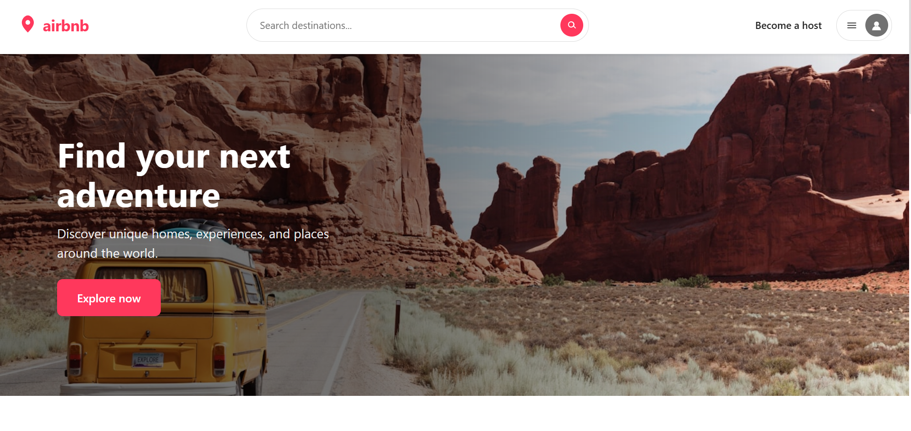

Hello, I'm Bea
Junior Web Developer
I’m an aspiring web developer building clean, responsive websites while growing my skills through real-world projects.

I’m an aspiring web developer building clean, responsive websites while growing my skills through real-world projects.
HTML5
CSS3
JavaScript
Bootstrap
Git & GitHub
Responsive Design
React

Built using html, css & javascript for the frontend & firebase for the backend.
# Urban Threads ### Building a functional e-commerce experience from the ground up **Urban Threads** is an e-commerce website designed to give customers a simple way to browse clothing, manage their shopping cart, place orders, and view their order history. The project also includes an administrative side for managing products and orders. This project gave me the opportunity to move beyond building individual web pages and start thinking about how different parts of a website work together as one complete application. --- ## The Challenge I wanted to build more than a static clothing website. The goal was to create an experience where a user could go from discovering a product all the way through to placing an order. This meant thinking about several different parts of an e-commerce application: * How products would be displayed and managed * How users would create accounts and log in * How products would be added to a cart * How orders would be created and stored * How users could access their previous orders * How an administrator could manage the store The challenge was making all of these pieces communicate with each other while keeping the experience simple for the user. --- ## My Role I designed and developed Urban Threads as a web development project. I worked on the frontend interface, functionality, user flows, authentication, database integration, shopping cart, checkout process, order management, and administrative functionality. Rather than treating each page as a separate project, I focused on connecting the pages and features into one complete user journey. --- ## Technologies **Frontend** `HTML` · `CSS` · `JavaScript` **Backend & Data** `Firebase` · `Firebase Authentication` · `Cloud Firestore` I chose Firebase because it allowed me to work with authentication and persistent application data without having to build a backend server from scratch. --- ## The User Experience The main customer journey was designed around a straightforward shopping flow: **Browse → Product → Cart → Login → Checkout → Order → Order History** A user can browse the available products, add items to their cart, review their selections, and complete the checkout process. Once an order has been placed, it is stored so the user can return and view their previous orders. I wanted the experience to feel straightforward rather than making the user figure out how to move through the application. --- ## Key Features ### Product Browsing Users can explore the clothing available in the store and view products before deciding what they want to purchase. ### User Authentication Firebase Authentication handles account creation and login, allowing users to have their own accounts and access their order information. ### Shopping Cart Users can add products to their cart, review their selections, adjust quantities, and see what they are purchasing before checking out. ### Checkout & Orders The checkout process takes the items in the cart and creates an order that can be stored and retrieved later. ### Order History Users can view orders associated with their account, giving them a record of their previous purchases. ### Admin Dashboard The project also includes an administrative area where store information can be managed. This introduced the concept of different types of users interacting with the same application in different ways. --- ## How I Built It I started by thinking about the different pages and features the application would need. From there, I broke the project into smaller pieces instead of trying to build the entire store at once. I worked through the application feature by feature, connecting the frontend to Firebase as the project developed. One of the biggest shifts in my thinking during this project was understanding that building a web application is not only about making the interface look good. The data behind the interface and the way different features communicate are just as important. For example, adding a product to a cart is not simply a button interaction. That action needs to affect the cart, the checkout process, and eventually the order that gets stored. --- ## Challenges ### Connecting Different Parts of the Application One of the challenges was making sure information moved correctly between different parts of the application. Products, users, carts, and orders all needed to work together. When something went wrong, I had to trace where the problem was coming from rather than only looking at the page where the error appeared. This helped me understand the importance of following the flow of data through an application. ### Working With Firebase Working with Firebase introduced me to concepts that were different from building a simple static website. I had to understand authentication, Firestore data, document structures, and how the application would read and write information. There was a learning curve, but working through those problems helped me become more comfortable with using a backend service. ### Debugging Not every feature worked correctly on the first attempt. I had to use browser developer tools, console messages, and testing to identify problems and understand why something was not behaving as expected. Instead of immediately changing random parts of the code, I became more intentional about isolating the problem and testing possible solutions. --- ## What I Learned Urban Threads helped me understand the difference between building a **website** and building a **web application**. I became more comfortable with: * JavaScript functionality and application logic * Firebase Authentication * Firestore databases * Working with persistent data * Building user flows * Managing shopping cart functionality * Creating and retrieving orders * Thinking about user roles * Debugging across multiple parts of an application More importantly, I learned that features are rarely isolated. A change in one part of an application can affect another part, so I started thinking more about the application as a whole. --- ## The Result Urban Threads became a functional e-commerce experience rather than just a collection of static pages. The finished project allows users to move through a complete shopping journey while interacting with persistent data. It also gave me experience thinking about the application from both the customer's and administrator's perspective. For me, the biggest achievement was seeing separate features come together into something that actually behaves like a real online store. --- ## What I Would Improve There are still several ways I would develop Urban Threads further. Some of the improvements I would make include: * Integrating a real payment gateway * Adding product search and filtering * Adding product reviews and ratings * Introducing a wishlist * Improving product recommendations * Expanding the admin dashboard with analytics * Further improving the responsive experience * Adding stronger validation and error handling * Improving the overall accessibility of the interface These improvements would take the project beyond its current functionality and make it closer to a production-ready e-commerce platform. --- ## Reflection Urban Threads was an important project in my development journey because it pushed me to think beyond writing code that simply works on a page. I had to think about **users, data, functionality, authentication, and how everything connects**. It also taught me that getting stuck is part of development. Some of the most useful learning happened when something broke and I had to slow down, understand the problem, and work through it. Building Urban Threads gave me a stronger foundation for tackling larger projects and made me more confident in my ability to build applications that are not just visually functional, but technically connected behind the scenes.

Built using React for frontend & MongoDB for backend.
# Airbnb-Style Accommodation Platform ### Building a full-stack accommodation platform from frontend to deployment As part of my capstone project, I built a full-stack accommodation platform inspired by the core experience of platforms like Airbnb. The application allows users to create accounts, browse accommodations, view accommodation details, and make reservations. Behind the interface is a REST API connected to a MongoDB database, with authentication and image-upload functionality. This project challenged me to bring together everything I had been learning about frontend development, backend development, databases, authentication, APIs, and deployment into one complete application. --- ## The Challenge I wanted to build an application that went beyond a collection of frontend pages. The platform needed to handle real data and allow different parts of the application to communicate with each other. The main requirements were to create a system where users could: * Register and log in * Browse available accommodations * View accommodation information * Make reservations * Manage their account The application also needed a backend capable of handling users, accommodations, and reservations while storing the information in a database. This meant I had to think about the entire system rather than only what the user sees in the browser. --- ## My Role I designed and developed the application as a full-stack project. I worked across both the frontend and backend, including: * Building the React interface * Creating reusable frontend components * Managing navigation and user flows * Connecting the frontend to the backend API * Building REST API routes * Creating MongoDB data models * Implementing authentication * Handling passwords securely * Managing image uploads * Connecting reservations to accommodations and users * Deploying the application * Debugging issues across the full stack This project required me to move between different layers of the application and understand how they work together. --- ## Technologies ### Frontend `React` · `Vite` · `React Router` · `Axios` ### Backend `Node.js` · `Express` ### Database `MongoDB` · `Mongoose` · `MongoDB Atlas` ### Authentication & Security `JWT` · `bcryptjs` ### Other Tools `Multer` · `Git` · `GitHub` · `Vercel` · `Render` --- ## The Architecture One of the biggest differences between this project and my earlier websites was the separation between the frontend and backend. The general flow was: **React Frontend → Axios → Express API → Mongoose → MongoDB** When a user interacts with the application, the frontend sends a request to the backend. The backend processes that request, communicates with MongoDB when necessary, and sends a response back to the frontend. This architecture helped me understand that the interface is only one part of a larger system. --- ## The User Experience I designed the application around the core journey of finding and reserving accommodation. **Register / Login → Browse → View Accommodation → Reserve → Confirmation** The goal was to keep the journey straightforward while allowing the application to handle the complexity behind the scenes. Authentication also meant that users could have an identity within the application rather than interacting with the platform as anonymous visitors. --- ## Key Features ### User Authentication Users can create accounts and log in securely. Passwords are hashed before being stored, while JSON Web Tokens are used to authenticate requests after login. This introduced me to the importance of separating authentication from the rest of the application and protecting routes that require an authenticated user. --- ### Accommodation Listings Users can browse accommodation listings and view information about individual properties. The accommodation data is stored in MongoDB rather than being hardcoded into the frontend, allowing the application to work with dynamic data. --- ### Image Uploads The application supports accommodation image uploads. I used Multer on the backend to handle multipart form data and connect uploaded images to accommodation listings. This was an important step in understanding how applications handle files rather than only text-based data. --- ### Reservations Users can make reservations for accommodations. A reservation connects information from multiple parts of the system, including the user and the accommodation being reserved. This helped me understand relationships between different collections and how backend logic can enforce the structure of those relationships. --- ### REST API I created API routes for the main areas of the application, including: * Users * Accommodations * Reservations The React frontend communicates with these endpoints using Axios. This separation allowed me to develop the frontend and backend as connected but distinct parts of the application. --- ## Challenges ### MongoDB Atlas & DNS One of the most difficult problems I encountered involved connecting the backend to MongoDB Atlas. The application was experiencing a DNS-related connection error even though I could verify that the database address itself was resolving. Instead of assuming the problem was somewhere in my application logic, I had to investigate the connection at a deeper level. I eventually configured DNS servers in the Node.js environment to work around the resolution problem. This experience taught me that debugging a full-stack application sometimes means looking beyond the code itself and understanding the environment the code is running in. ---